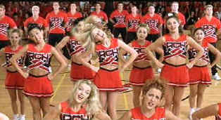

| Bring it On (SE)/C+,A- |
| Universal/2000/99/ANA 1.85 |
Wait long enough and Hollywood will surely dig the very last nugget from their treasure trove of ideas. Wait long enough, and they get to the bottom. With a number of beauty pageant flicks in recent years, why not a look at the world of competitive cheer leading. Bring it On is the answer to audiences starving for some insight into the world of shake it break it, go for the spirit wand cheer leading.
 |
| The girls bring it. ©Universal |
The plastic girls and boys of Rancho Carne High are led by blonde and
innocent Torrence. Newcomer Missy joins the cheer leading squad to add a bit of urban angst. When
Torrence discovers that her five time national championship team has actually been stealing
routines from an inner city black cheerleading squad, she digs deep to into her scanty cheer outfit
to find integrity. The ensuing conflict and competitions are the heart of the movie. Don't look for
much originality in the production. Even the montage scenes are run of the mill and not very funny.
Kirsten Dunst invests Torrence with pure nubile cheer leading energy. Dunst is
quite funny, coyly exploring the moves and poses of a young girl discovering herself. Happily,
Dunst is charming. The film depends on that charm to offset the light weight material and easy to
poke fun out characters. Elisha Dushku's Missy is around to supply some contrast to the everlasting
blondeness of the girls and too white smile of the guys. Jesse Bradford, playing Missy's brother
Cliff is a pretty boring character and provides very little to the film.
Peyton Reed's direction is energetic. The camera even seems like it went to
cheer leading school. Reed fills the screen with scanty cheer outfits and idiotically rousing
cheers.
The cheer leaders are captured in the all the right poses through a sharp
prurient lens. This special edition DVD is consistently colorful with rich saturation. Fleshtones
are nicely varied. You can even discern a slight unevenness in the coloration of Kirsten Dunst's
teeth. The bright transfer is sharp with fine depth of detail. Some slight edge enhancement appears
in a couple of scenes, but you have to squint to catch it. Universal delivers the DVD with a choice
of Dolby Digital 5:1 or DTS. I found the dialogue slightly muffled on the DTS tracks. Dolby cleared
up the problem. It's a pumped up recording with good bass thwumps adding to the acrobatics of the
cheer folks.
Peyton Reed provides special edition audio commentary that is very humorous.
Man, these kids went through four weeks of grueling eight hour a day cheer leading camp. I
like Reed's knowledge of film vocabulary. Deleted and extended scenes, a short home movie
rendition of the car wash sequence, a making of, wardrobe and make-up tests and a music video add
to the thorough special edition DVD.

Selections from the Feature Archive include articles on
Akira Kurosawa, Frank
Darabont, Blonde Bimbos, Hollywood Street Gangs, or Vietnam: The
Hollywood Pariah, and many more....
Sturges Emerges
Preston Sturges was Hollywood's resident comic genius for more than a decade. His movies are
timeless. Click on his image to read all about it.

The Movie Poster Archive includes extensive poster images from the films of stars like Susan Hayward, Kirk Douglas, Katharine Hepburn and many more. Our featured star is Doris Day.


DVDPlanet is the DVD
incarnation of legendary laser retailer Ken Crane's. Deep discounts and serious service.

Great site for DVD followers. Lots of
information, some speculation, opinion, and reviews all bundled in a sparkling interface.

Cinemedia is
the largest film and media directory with over 25,000 links.